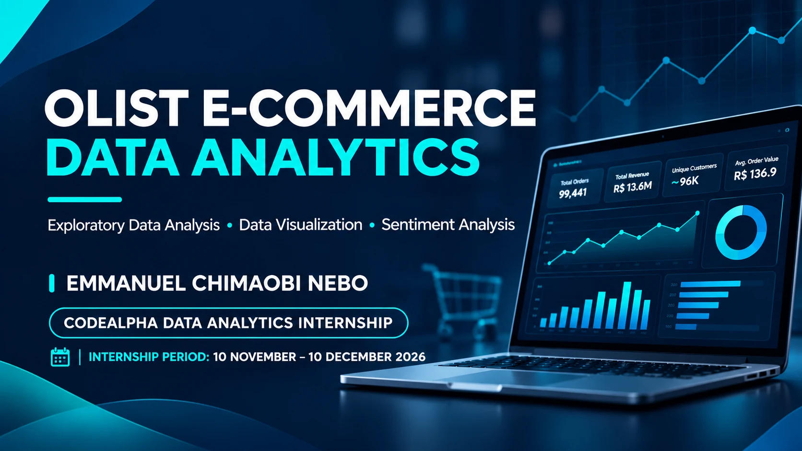
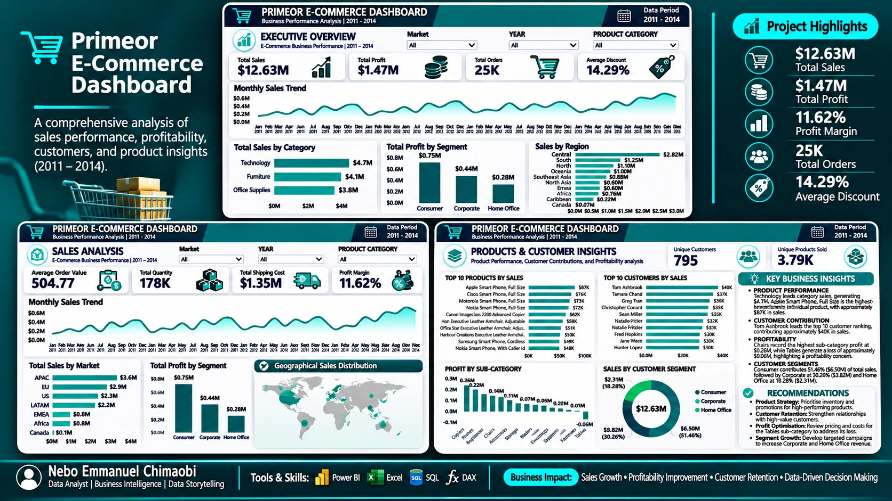
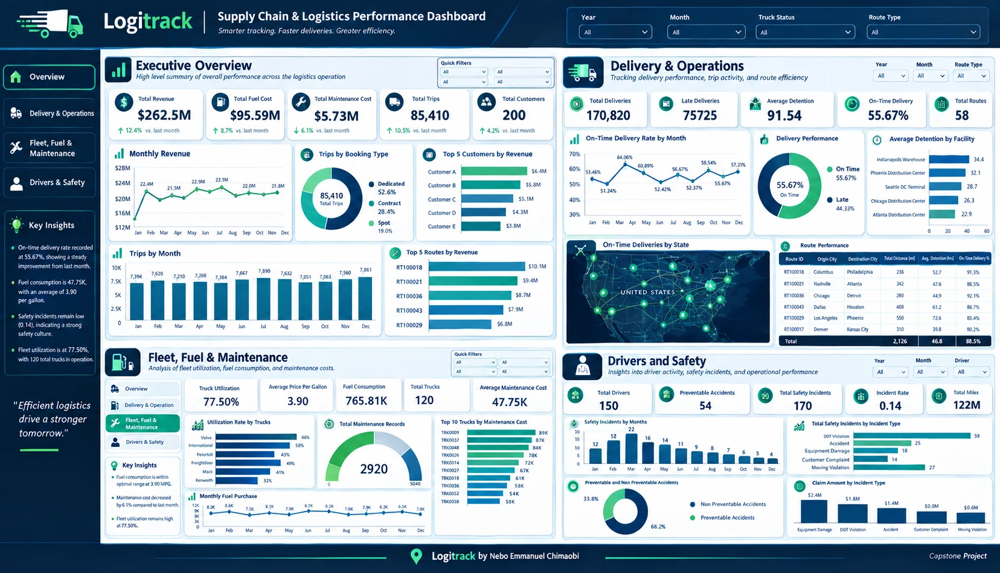
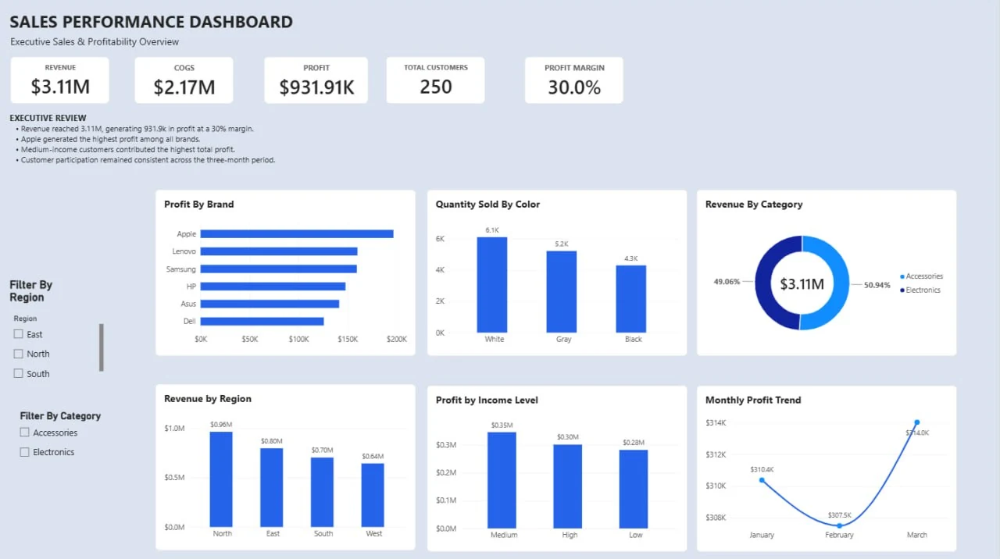

Microsoft Excel
Data cleaning, formulas, PivotTables, reporting and exploratory analysis.
DATA PREPARATION & ANALYSISDATA ANALYST · BUSINESS INTELLIGENCE
Certified Data Analyst & BI Professional | Building data-driven solutions with SQL, Excel, Power BI & Python | Turning complex data into business insights.
Business questions → Data exploration → Actionable insight
✳01 — ABOUT
I’m an entry-level Data Analyst with an engineering background and a growing portfolio of practical analytics projects.
My journey combines structured problem-solving with hands-on data work. I use tools such as Power BI, SQL, Excel and Python to prepare data, explore performance, develop KPIs and communicate findings through clear visual reports.
I’m particularly interested in e-commerce, retail, sales performance and operational analytics — areas where good analysis can help teams understand what is happening and make better decisions.
02 — TOOLKIT
A practical toolkit for preparing, analysing and presenting data.
Data cleaning, formulas, PivotTables, reporting and exploratory analysis.
DATA PREPARATION & ANALYSISInteractive dashboards, data modelling, DAX, Power Query and reporting.
BUSINESS INTELLIGENCEQuerying, filtering, joins, aggregations and structured data analysis.
DATABASE ANALYSISFoundational data manipulation, exploratory analysis and visualisation.
ANALYTICS & AUTOMATIONData transformation, shaping, merging and repeatable preparation steps.
DATA TRANSFORMATION03 — SELECTED WORK
A selection of practical projects exploring business performance, customer behaviour and data-driven decision-making.

01CODEALPHA · DATA ANALYTICS INTERNSHIPAn e-commerce analytics project exploring marketplace data to understand business performance and uncover useful patterns. The project brings together exploratory analysis, data visualisation and business-focused interpretation.
Explore repository ↗
02PRIMEOR · E-COMMERCE ANALYTICSA multi-tool business analysis project examining e-commerce performance through SQL, Excel and Power BI. The work focuses on sales, profitability, customer and product performance, translating analysis into an executive dashboard.
Explore repository ↗
03LOGITRACK · FLEET PERFORMANCE CAPSTONEA comprehensive logistics performance dashboard covering executive operations, delivery performance, fleet utilisation, fuel and maintenance costs, and driver safety. It brings operational KPIs and trends together to support data-informed logistics decisions.
Explore repository ↗
04FIRST POWER BI PROJECT · TS ACADEMYA sales performance and profitability dashboard developed with Power BI. It presents an executive view of revenue, cost of goods sold, profit, customers and profit margin, with analysis across brands, categories, regions, income levels and monthly trends.
04 — MY APPROACH
A structured approach helps keep analysis focused, transparent and connected to the business question.
Understand the dataset, assess data quality and organise the information.
Clean, reshape and prepare data for reliable analysis.
Explore trends, investigate patterns and develop meaningful KPIs.
Present findings through clear visuals, dashboards and recommendations.
05 — LET'S CONNECT
I’m open to connecting with professionals, teams and organisations working with data. Let's talk about how I can contribute.
Send me an email ↗